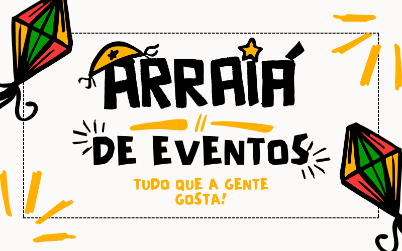
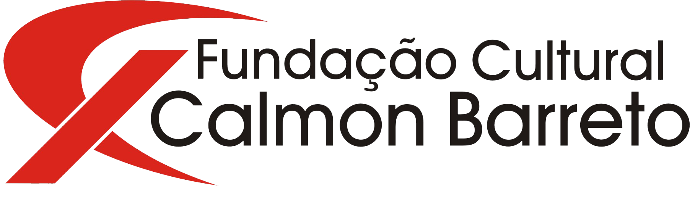
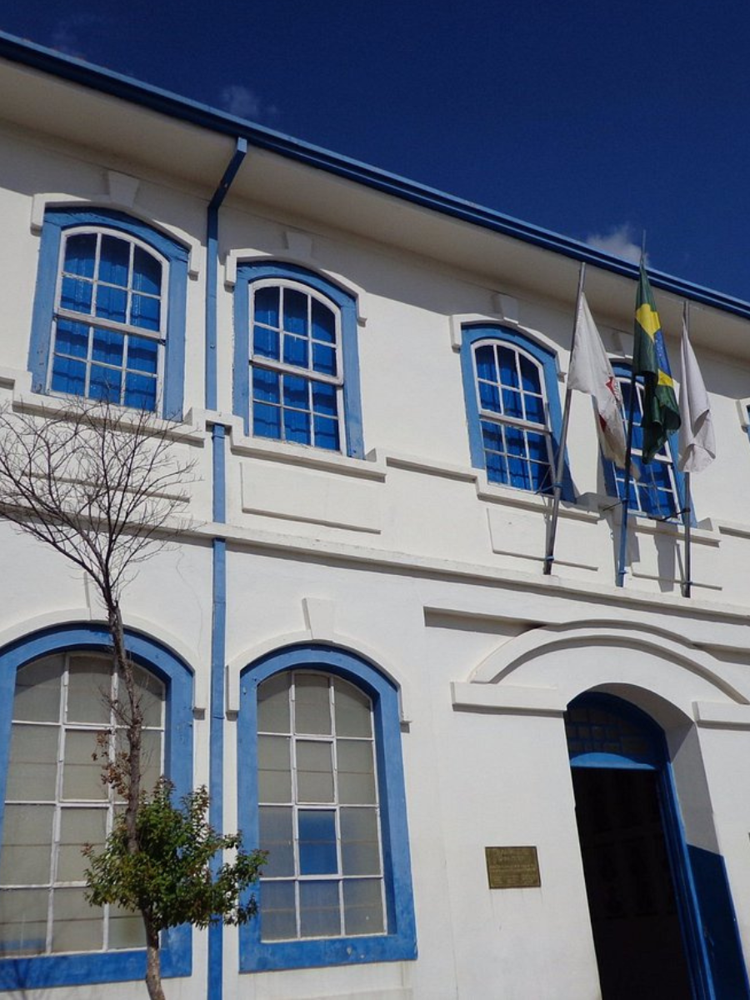
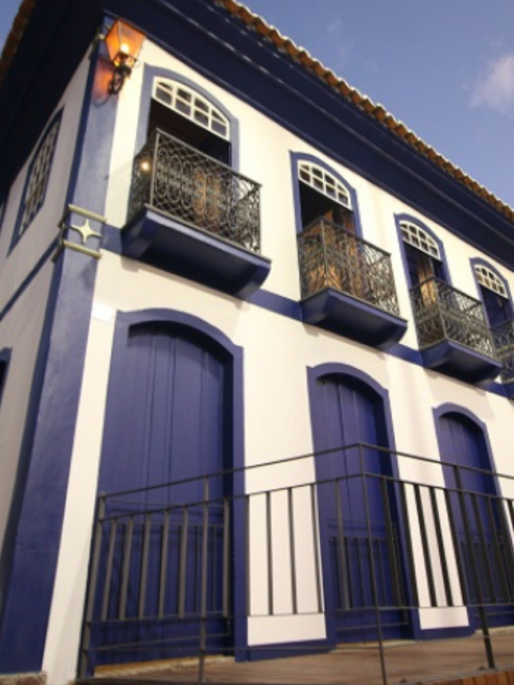
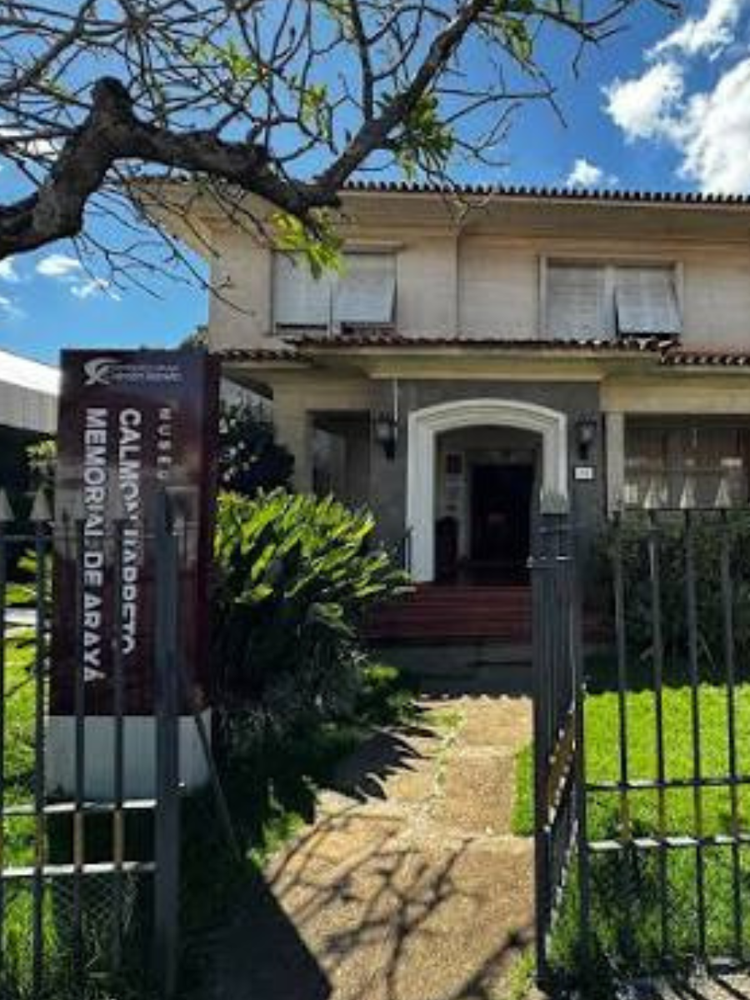

EventoTítulo da Página
Aqui ficará todo o conteúdo da Fundação.

Encontre rapidamente os principais serviços e conteúdos da Fundação Cultural Calmon Barreto.
Acompanhe as principais notícias e acontecimentos da Fundação Cultural Calmon Barreto.
Patrimônio, história e cultura preservados para toda a comunidade.



Conheça alguns dos resultados e patrimônios administrados pela Fundação Cultural Calmon Barreto.
Confira os próximos eventos, exposições, oficinas e atividades promovidas pela Fundação Cultural Calmon Barreto.
Exposição permanente reunindo documentos históricos, fotografias e objetos que contam a história da cidade.
Atividade voltada para estudantes e visitantes interessados no patrimônio histórico de Araxá.
Conheça alguns dos bens históricos preservados pela Fundação Cultural Calmon Barreto.
Aqui ficará todo o conteúdo da Fundação.